Tropidophiidae
The family Tropidophiidae (dwarf boas) has 36 living species in SnakeList (none venomous), in 2 genera, plus 5 fossil species listed separately.
- 36living species
- 36non-venomous
- 2genera
- 5fossil
About the family
Small, boa-like snakes found mainly in Central America and the Caribbean.[1,2]
Sources for this introduction
- Snake families (course notes). George Mason University.
- Tiny giant snakes. Reptiles Magazine.
Information last reviewed 9 November 2026.
Species
Showing 36 species
 Bahama-Wood Snake (canus)Tropidophis canus
Bahama-Wood Snake (canus)Tropidophis canus Bahama-Wood Snake (curtus)Tropidophis curtus
Bahama-Wood Snake (curtus)Tropidophis curtus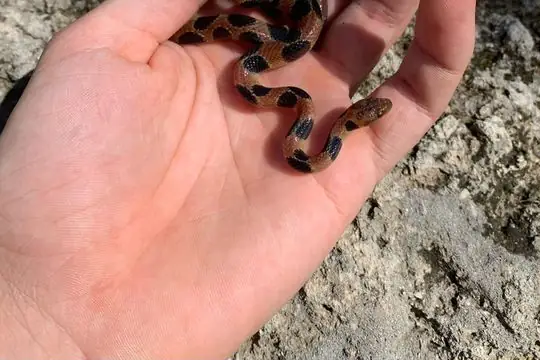
Banded Dwarf BoaTropidophis semicinctus- No photo yetBattersby's Dwarf BoaTropidophis battersbyi
- No photo yetBlackbelly Dwarf BoaTropidophis nigriventris
 Brazilian Dwarf BoaTropidophis paucisquamis
Brazilian Dwarf BoaTropidophis paucisquamis Caicos TropeTropidophis greenwayi
Caicos TropeTropidophis greenwayi- No photo yetCanasi TropeTropidophis celiae
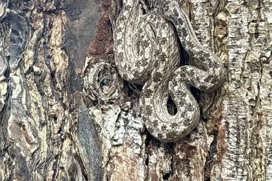
Cayman Brac TropeTropidophis schwartzi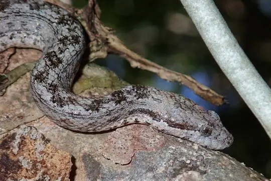
Cayman Islands Dwarf BoaTropidophis caymanensis- No photo yetCuban Dusky TropeTropidophis fuscus
- No photo yetCuban Khaki TropeTropidophis hendersoni
- No photo yetEscambray Small-headed TropeTropidophis hardyi
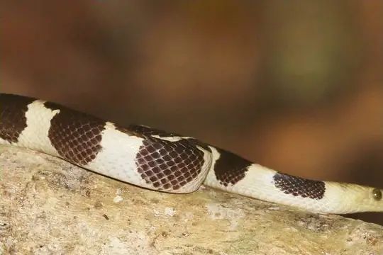
Feick's Dwarf BoaTropidophis feicki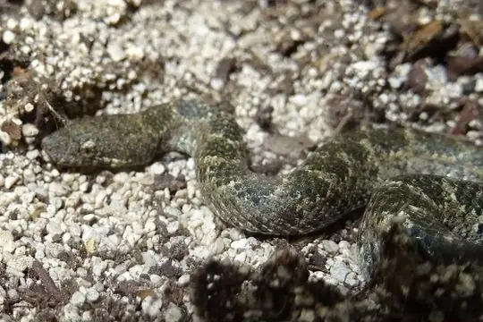
Guanahacabibes TropeTropidophis xanthogaster Hispaniolan TropeTropidophis haetianus
Hispaniolan TropeTropidophis haetianus Jamaican Brown TropeTropidophis jamaicensis
Jamaican Brown TropeTropidophis jamaicensis Jamaican Eyespot TropeTropidophis stejnegeri
Jamaican Eyespot TropeTropidophis stejnegeri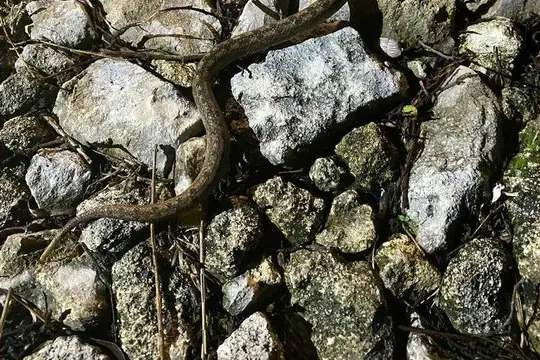
Lazy SnakeTropidophis parkeri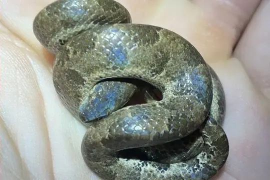
Leopard Dwarf BoaTropidophis pardalis- No photo yetNavassa Dwarf BoaTropidophis bucculentus
- No photo yetNorthern Eyelash BoaTrachyboa boulengeri
- No photo yetPilsbry's Dwarf BoaTropidophis pilsbryi
 Pilsbry's Dwarf Boa (galacelidus)Tropidophis galacelidus
Pilsbry's Dwarf Boa (galacelidus)Tropidophis galacelidus- No photo yetPortland Ridge TropeTropidophis stullae
 Sancti Spiritus TropeTropidophis spiritus
Sancti Spiritus TropeTropidophis spiritus- No photo yetSouthern Eyelash BoaTrachyboa gularis
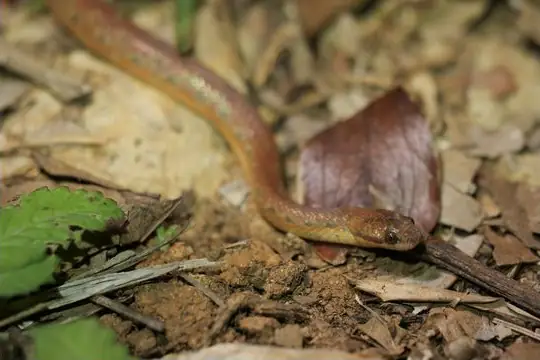
Spotted Dwarf BoaTropidophis maculatus Taczanowsky's Dwarf BoaTropidophis taczanowskyi
Taczanowsky's Dwarf BoaTropidophis taczanowskyi Wood SnakeTropidophis melanurus
Wood SnakeTropidophis melanurus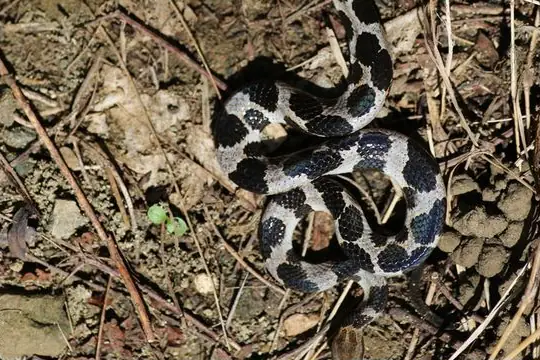
Wright's Dwarf BoaTropidophis wrighti- No photo yetZebra TropeTropidophis morenoi
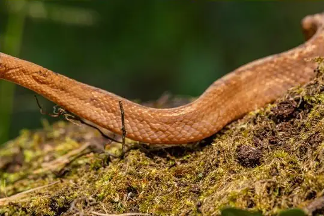
Tropidophis cacuangoae Tropidophis grapiuna
Tropidophis grapiuna- No photo yetTropidophis preciosus
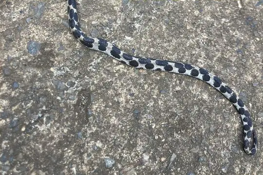
Tropidophis steinleini
No snakes in Tropidophiidae match.
Fossil species
These species are known only from fossils. They are not living species and are not counted in this page’s totals. The geological ages given are approximate: they come from the rock layers the fossils were found in, and the dating and classification of fossil snakes are revised as new material is studied.
- Platyspondylia germanica (late Oligocene, about 25 million years ago)
- Platyspondylia lepta (late Oligocene, about 24 million years ago)
- Platyspondylia sudrei (fossil; age not recorded in SnakeList)
- Szyndlaria aureomontensis (middle Eocene, about 44 million years ago)
- Tropidonotus atavus (late Oligocene, about 24 million years ago)
About the family Tropidophiidae
- Distribution: living species recorded in 9 countries (+2 territories), on 2 continents: North America, South America.
- Genera: Tropidophis 34, Trachyboa 2.